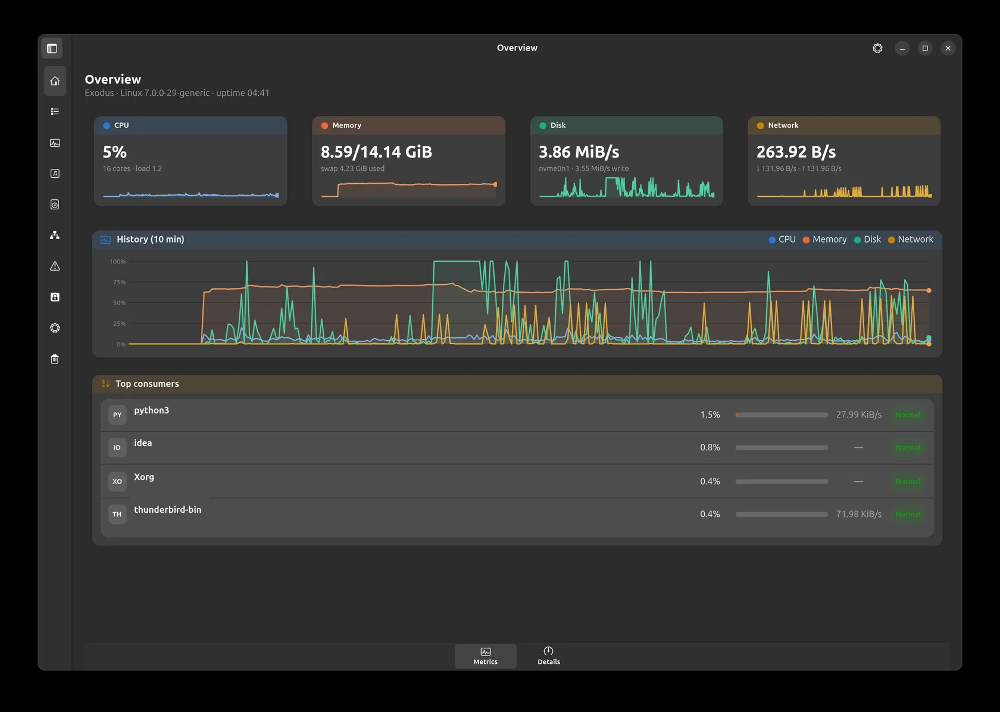
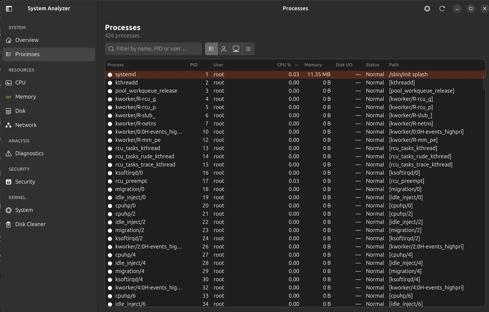
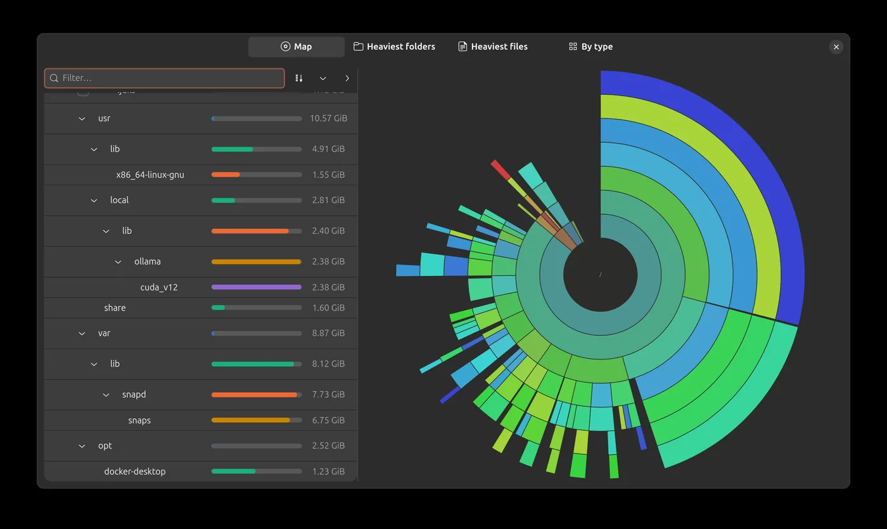
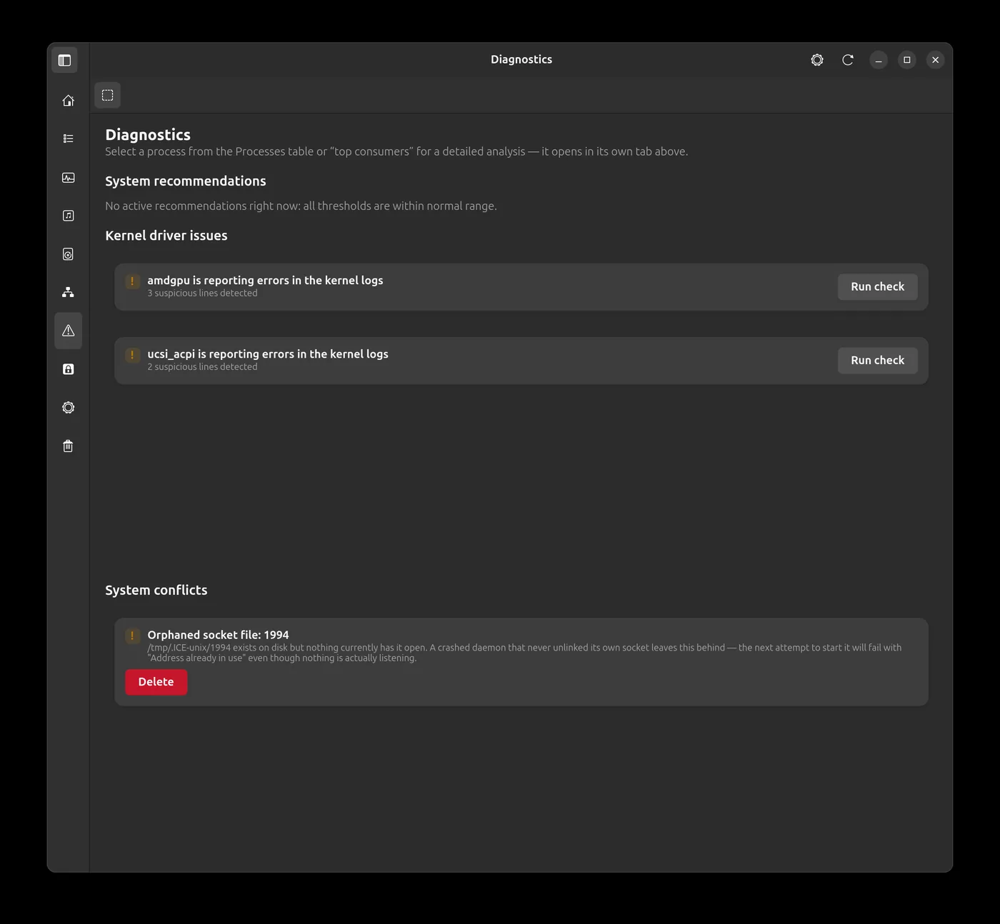
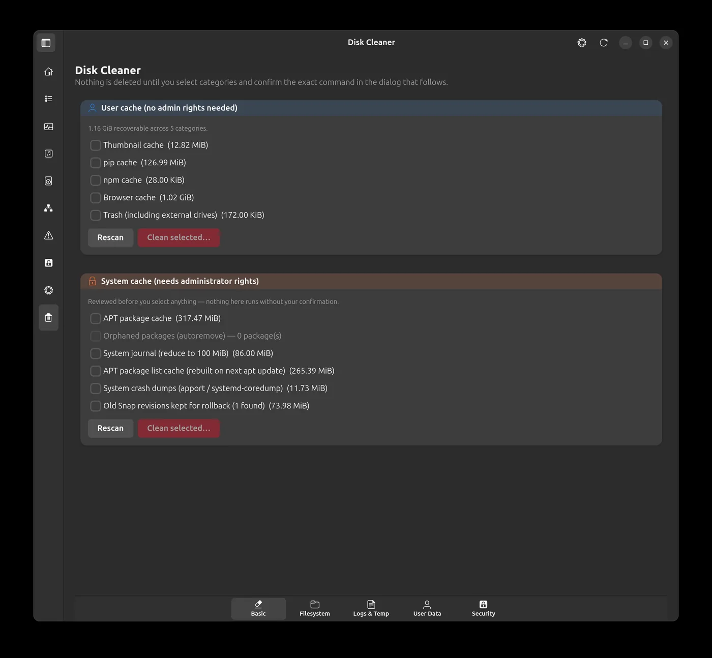
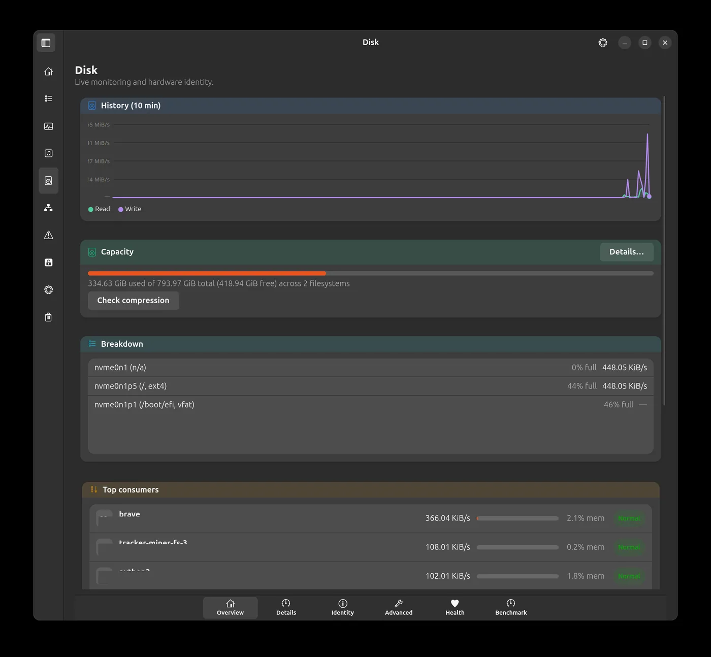

Core 3 is saturated
while others stay idle.
That's an actual line System Analyzer will show you — not a chart you have to interpret yourself. It's a native GTK4 / Libadwaita diagnostics app for Ubuntu with eBPF-powered per-process tracing: memory leaks, flame graphs, syscall anomalies, a ransomware canary — wrapped in a privilege-separated desktop app that never runs as root.

module · processes
Four scopes. One right-click from a full diagnosis.
All, User, System, or Applications — the last one folds a browser's dozen tabs into a single row. Right-click any process to open it in Diagnostics, kill it with confirmation, jump to its executable's folder, or copy its PID, name, or path.


module · resources/disk
See what's eating your disk before you delete anything.
A radial sunburst of your folder tree, seven levels deep, next to a matching list — search, sort, expand, zoom. Each folder's bar is scaled to its own parent, so "this is basically all of it" is visible at a glance at any depth. A checkbox moves files to Trash, restricted to paths strictly inside your home directory.
module · diagnostics/ebpf
Nothing gets traced until you click Start.
Pick any process and open it in its own Diagnostics tab. Its Overview sub-tab diagnoses why it's consuming resources — CPU, memory, I/O, sockets, kernel log, systemd status — and suggests concrete actions (renice, restart the unit, and more), every one confirm-gated. Its Metrics sub-tab adds memory leaks via malloc/free probes, I/O latency, scheduling delay, lock contention, TCP handshake time, a live CPU flame graph, and a syscall baseline that learns what's normal and flags what isn't. A pinned Recommendations tab covers what isn't process-specific: swap/disk-space/CPU playbooks, kernel driver issues, and system conflicts. The ransomware canary only ever suggests a manual freeze — it never acts on its own. Every eBPF card needs a one-time pkexec prompt; the rest of the app needs none.


module · kernel/disk_cleaner
Every cleanup shows you the exact shell command first.
Six tabs: user/system caches, a dedicated Snap tab (every installed snap in one list, old revisions and your own installs removable individually or in bulk), a filesystem sweep (empty folders, broken symlinks, duplicates hardlinked instead of deleted), log and temp-file maintenance, orphaned user data, and a security tab for container pruning, TRIM/Btrfs upkeep and secure delete (shred). Every scan exports to JSON/CSV. Nothing is ever deleted silently.
module · resources/cpu · disk · network
CPU, Disk and Network each get their own deep-dive page.
Beyond the shared Overview (history chart, top consumers,
automatic analysis), each resource adds tabs for what's specific
to it: CPU gets hardware identity, per-core frequency/thermal
detail, perf-based hardware counters
and a benchmark. Disk gets drive identity (model, serial,
firmware, encryption), an I/O scheduler and PCIe link view,
on-demand S.M.A.R.T. health, and a sequential/random-4K
benchmark. Network gets driver/MAC/offload identity, packet and
error counters, IP/routing/DNS/DHCP detail, and — only when
actually in use — SR-IOV, bonding, bridges and VLANs.

privilege model
The UI refuses to start as root. Full stop.
eBPF tracing needs elevated access to attach probes, so a separate, minimal worker gets it instead — launched on demand, talking to the UI over a local socket. A graphical prompt appears exactly once, the first time you click Start tracking on an eBPF card. Every resource page, the process table, and the disk cleaner's scan need no elevated privileges at all.
⇄ local Unix domain socket, both directions
install
One package. No source, on purpose.
This repository ships only the signed .deb
— grab it from Releases and let apt resolve every dependency.
eBPF tracing ships as compiled CO-RE/libbpf probes, no separate
BCC package needed; a handful of on-demand cards (S.M.A.R.T.
health, RAM SPD info, hardware performance counters) each
recommend one small extra package. The app is fully usable
without any of them — those specific cards just show a clear
error instead of failing silently.
# download the latest release, then $ sudo apt install ./system-analyzer_1.2.0_all.deb # apt resolves gtk4, libadwaita, psutil, pkexec…